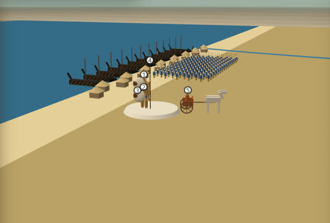
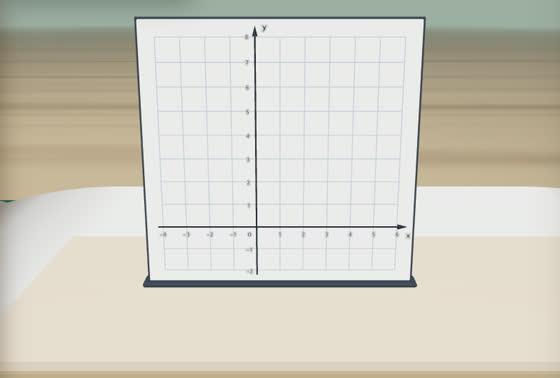
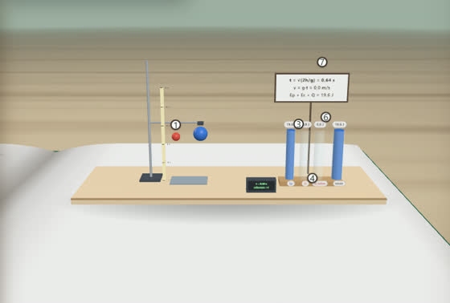
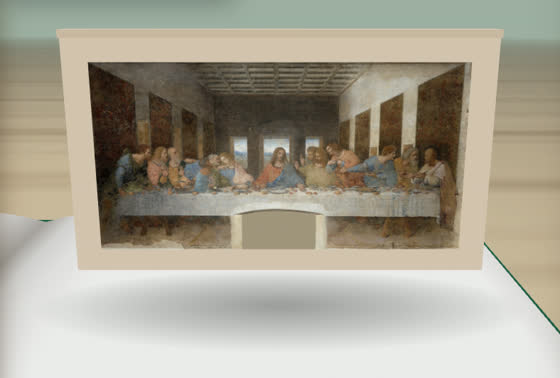
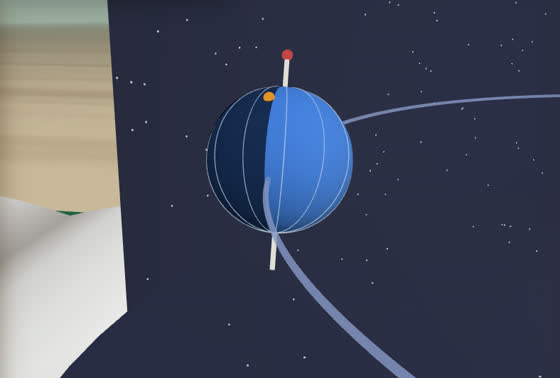
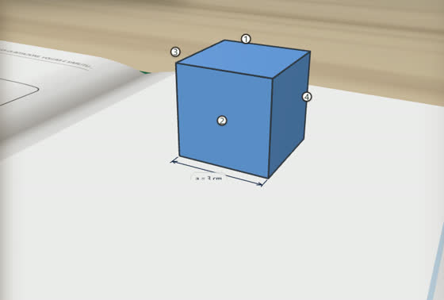
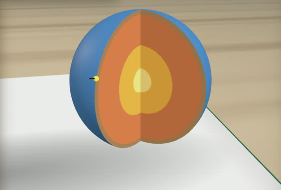
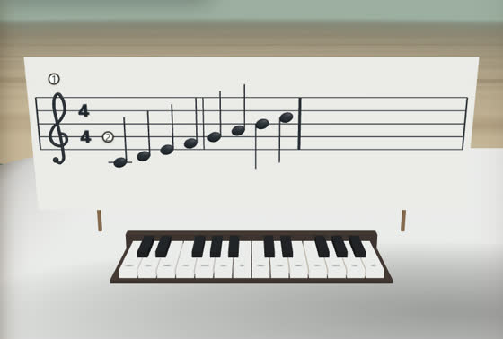
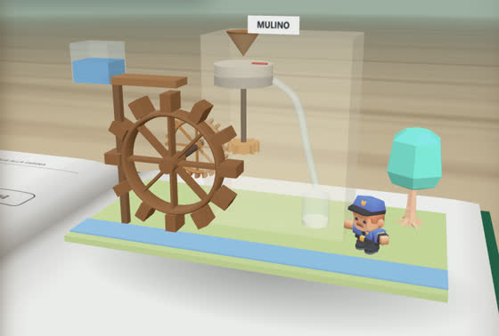
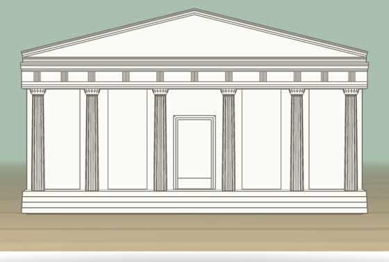

Le lezioni

StoriaBattaglieI Micenei
Le civiltà dell'Egeo: i Micenei e la guerra di Troia

MatematicaConcettiStudio di funzione: un esempio svolto
Dominio e simmetria, passo per passo

ScienzeLaboratorioL'energia si trasforma
Energia potenziale, energia cinetica e calore

Arte e immagineArteL'Ultima Cena di Leonardo
Leonardo da Vinci, il Cenacolo

ScienzeCieloLe stagioni e le fasi della Luna
Rotazione, rivoluzione, stagioni e fasi lunari

MatematicaSolidiGeometria solida
Sviluppo, solidi di rotazione, volumi e similitudine

Scienze della TerraTerraLa Terra in sezione
Struttura interna, placche e terremoti

MusicaMusicaNote, ritmo e timbro
Il pentagramma, i valori delle note e il timbro

TecnologiaOfficinaIl mulino ad acqua
Dall'acqua alla farina

Arte e immagineFacciateDal tempio greco alla cupola del Pantheon
Il tempio di Paestum, San Miniato al Monte e il Pantheon